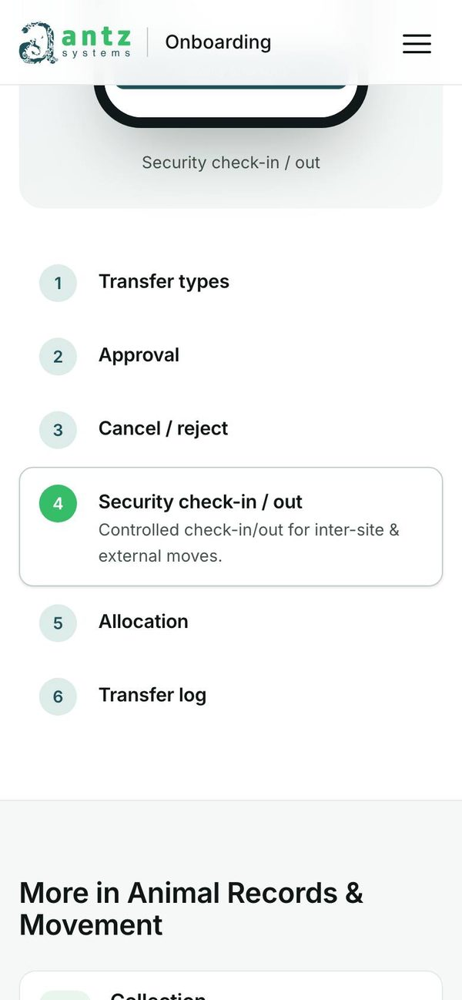
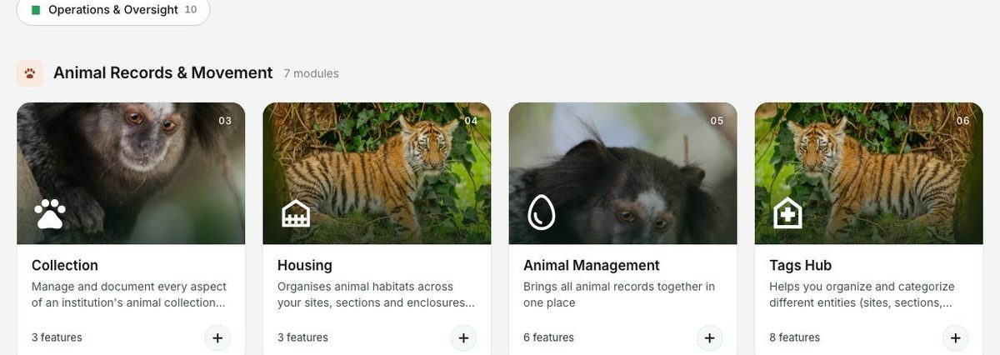
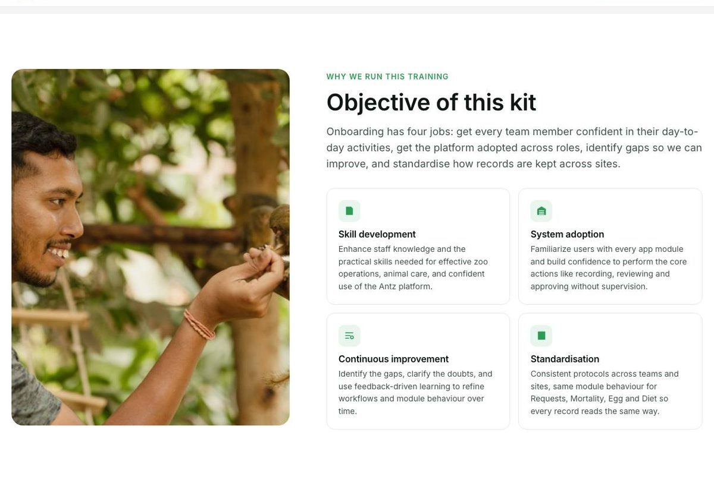
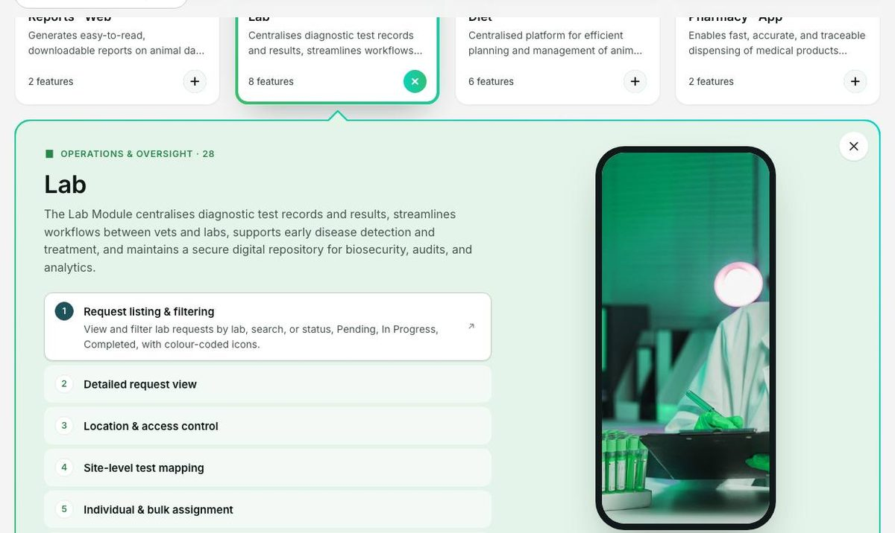
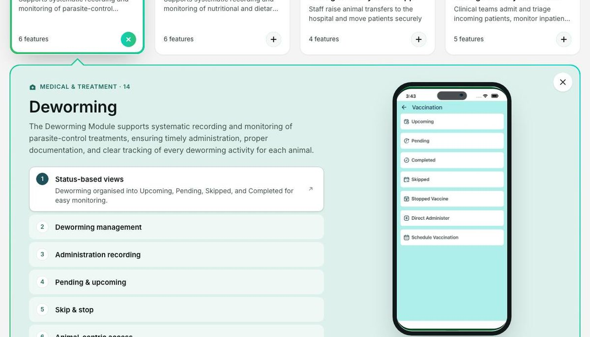
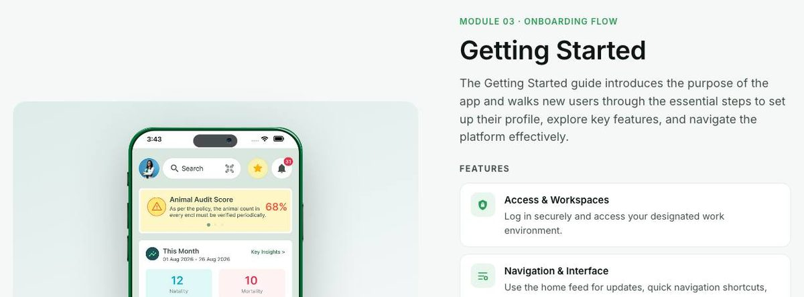
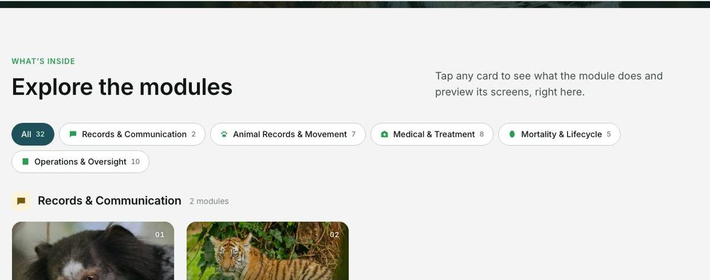
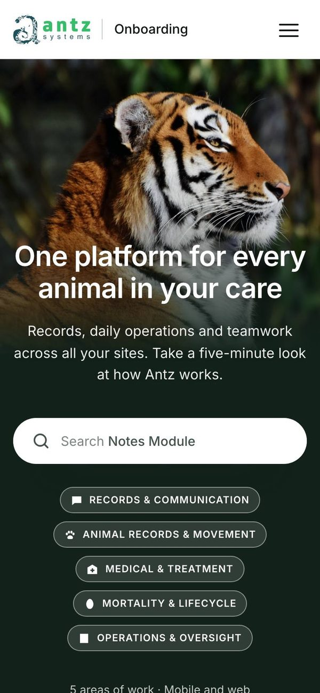

The current build, measured against Nielsen's ten usability heuristics, with suggestions and recommendations for what to change next.
The interaction model is strong. Module cards open in place, the preview follows the visitor's tap on phones, Back restores their place, and every animation respects reduced motion. Most of the remaining problems are about what the page says and shows rather than how it behaves. Placeholder icons and two repeated photos make 32 modules look alike. Some screens are not the product. The staff-training copy speaks to the wrong reader. The one conversion path still depends on an email link. The motion layer has also grown to seven separate effects, which is more than a first-time visitor needs.
| Heuristic | 3 | 2 | 1 | Health |
|---|---|---|---|---|
| 1 · Visibility | 1 | 2 | 0 | |
| 2 · Real-world match | 3 | 0 | 1 | |
| 3 · Control, freedom | 0 | 1 | 1 | |
| 4 · Consistency | 1 | 2 | 1 | |
| 5 · Error prevention | 1 | 0 | 0 | |
| 6 · Recognition | 0 | 2 | 1 | |
| 7 · Efficiency | 0 | 1 | 2 | |
| 8 · Minimalism | 0 | 2 | 0 | |
| 9 · Error recovery | 0 | 0 | 1 | |
| 10 · Help, docs | 0 | 1 | 0 |
Columns count findings at each severity. No catastrophic (4) issues were found.
An expert review of the live local build, walking five prospect tasks at 1440px and 390px in Chrome 153, and checking each screen against Nielsen's ten heuristics.
| 4 Catastrophic | Must fix before release |
| 3 Major | Important to fix, high priority |
| 2 Minor | Fix, lower priority |
| 1 Cosmetic | Fix if time allows |

#/m/…), which search results and "Open the full tour" lead to, still place the device above the list.



#housing) and reopen it on load, scrolled into view.#37BD69 is 2.43:1 on every "Book a walkthrough" and "Open the full tour" button, against a 4.5:1 minimum. Green eyebrows (#2A9D55) are 3.47:1.#27864B (4.57:1) for button fills and green text; keep #37BD69 and the gradient for borders and accents, where 3:1 is enough.
mailto: link. On a work laptop with no mail app, or inside a shared page, nothing happens. The address is shown as text only in the bottom banner.
/), with synonyms such as "death" for Mortality and "hospital" for HIMS.
These go further than individual findings. Each one makes the tour easier to follow or more memorable without adding weight.
Open the page, after the banner, with a single scenario that crosses modules: "Moving an animal between sites" through Transfer, Approvals, Security and Housing. Real screens exist for every step.
Prospects remember stories, not catalogues. The grid then becomes the reference.
Four small cards (Curator, Vet, Keeper, Director) that filter the grid to the six modules each role uses daily.
Turns 32 choices into six, in the visitor's own terms.
Merge each App and Web pair, and the three treatment modules, behind an App | Web switch inside the panel.
Takes the grid from 32 cards to about 24 and shows the two-surface story visually.
Under the banner: number of sites, animals and species managed on Antz, and one customer quote. Only real figures from Antz.
The page currently has claims but no evidence.
One graded photo per area, subjects looking into the page, with space for the icon. Reuse the same five across hero chips, filters and cards.
Colour and subject become navigation cues.
Write it down: one signature (the gradient border), one entrance (the fade-up), and quick exits. Anything new has to replace something.
Keeps the craft visible without the page feeling busy.
Twenty-minute remote sessions, thinking aloud, after the "Now" fixes. Track success, time on task, and a 1 to 7 ease rating.
| # | Task | What it checks |
|---|---|---|
| 1 | "You manage three sites. Can Antz handle moving an animal between them?" | Finding a module, panel comprehension |
| 2 | "Show me what recording a vaccination looks like." (on a phone) | Search, module page on mobile |
| 3 | "Which two modules would your vets use most? Why?" | Card recognition, icons, copy |
| 4 | "Send a colleague a link to the Housing module." | Shareable state |
| 5 | "Arrange a demo for your team." | Conversion path |
| Audit | Issue | Status | Note |
|---|---|---|---|
| F1 | Mobile tour shows screen out of view | Partly fixed | Fixed in card panels; open on module pages (H1.1) |
| F2 | Stock photos in phone frames | Open | H2.3 |
| F3 | Featured workflow opens on a dimmed screen | Open | Animal Transfer step 1 still shows the modal |
| F5 | Duplicate modules, wrong Deworming screen | Open | H2.3, recommendation 3 |
| F6 | Area tabs hid most of the catalogue | Fixed | Replaced by grouped cards with an All filter |
| F7 | Card copy written for training | Partly fixed | "The X Module" openings removed; still cut mid-sentence (H2.4) |
| F8 | Search only on home; Back loses place | Partly fixed | Back now restores place; search still hero-only (H6.2) |
| F10 | Phone hero fills the first screen | Open | H7.1 |
| F11 | Rotating placeholder never stops | Open | H1.3 |
| F12 | Booking is only an email link | Partly fixed | Address shown in the banner; buttons still mailto (H5.1) |
| F14 | FAQ misses buyer questions | Open | H10.1 |
| F15 | Brand green fails contrast | Open | H4.1 |
| F16 | Screen reader and focus handling | Partly fixed | Esc returns focus, panels are labelled regions; route changes still silent |
| F17 | Heavy screenshots | Partly fixed | 784 KB of card thumbnails; full screens still up to 1.9 MB |
| F19 | Mixed icon styles | Partly fixed | Brand icons on cards; UI icons still mixed |